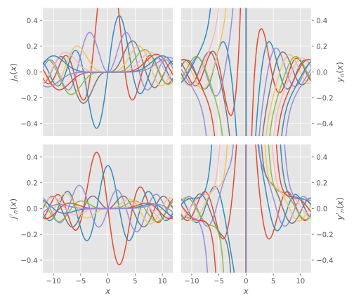
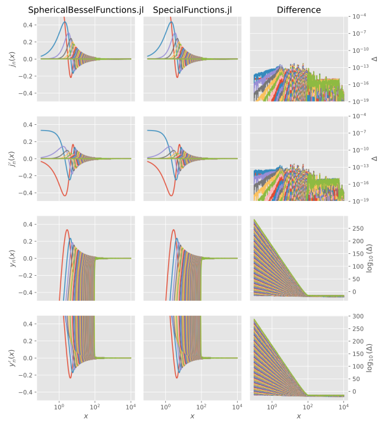

SphericalBesselFunctions.jl
This library provide efficient and accurate implementations of the regular and irregular spherical Bessel functions [$j_n(z)$ and $y_n(z)$] and Coulomb functions [$F_\lambda(\eta,z)$ and $G_\lambda(\eta,z)$], and their derivatives. The former are solutions to the radial part of the Helmholtz equation in spherical coordinates:
\[\tag{DLMF10.47.1} z^2w'' + 2zw' + [z^2 - n(n+1)] = 0,\]
whereas the latter obey
\[\tag{DLMF33.2.1} w'' + \left[ 1 - \frac{2\eta}{z} - \frac{\lambda(\lambda+1)}{z^2} \right]w = 0.\]
The spherical Bessel functions are related to the Coulomb functions as
\[\tag{DLMF33.5.3} \begin{aligned} j_n(z) &= \frac{F_n(0,z)}{z}, & y_n(z) &= -\frac{G_n(0,z)}{z}. \end{aligned}\]
Usage
x = range(-12, stop=12, length=1000)
nℓ = 10
j, j′, y, y′ = bessels(x, nℓ)
Accuracy
To check the accuracy, we compare with SpecialFunctions.jl, which however does not provide the spherical Bessel functions but the ordinary (cylindrical) ones. They are however related as
\[\tag{DLMF10.47.\{3,4\}} \begin{aligned} j_n(z) &\equiv \sqrt{\frac{\pi}{2z}} J_{n+\frac{1}{2}}(z),\\ y_n(z) &\equiv \sqrt{\frac{\pi}{2z}} Y_{n+\frac{1}{2}}(z). \end{aligned}\]
Furthermore, SpecialFunctions.jl does not provide the derivatives out-of-the-box, but they are easily found using the recurrence relation.:
\[f'_n(z) = f_{n-1}(z) - \frac{n+1}{z} f_n(z), \qquad f_n = j_n,y_n.\]
This time, we investigate a larger domain of parameters, but avoid smaller values of $x$ than $0.1$ since that does not seem to work in SpecialFunctions.jl (SphericalBesselFunctions.jl works at $x\leq0$ as well):
nx = 1001
x = 10 .^ range(-1, stop=4, length=nx)
nℓ = 105
j, j′, y, y′ = bessels(x, nℓ)
We note that SphericalBesselFunctions.jl seems to be ~3 times faster than SpecialFunctions.jl when evaluating all Bessel functions for a fixed value of $x$, most likely due to extra processing taking place when SpecialFunctions.jl does not compute all values simultaneously, but one order at a time:
SphericalBesselFunctions.jl:
BenchmarkTools.Trial:
memory estimate: 0 bytes
allocs estimate: 0
--------------
minimum time: 76.331 μs (0.00% GC)
median time: 77.057 μs (0.00% GC)
mean time: 80.337 μs (0.00% GC)
maximum time: 197.715 μs (0.00% GC)
--------------
samples: 10000
evals/sample: 1SpecialFunctions.jl:
BenchmarkTools.Trial:
memory estimate: 0 bytes
allocs estimate: 0
--------------
minimum time: 170.295 μs (0.00% GC)
median time: 185.132 μs (0.00% GC)
mean time: 193.312 μs (0.00% GC)
maximum time: 442.129 μs (0.00% GC)
--------------
samples: 10000
evals/sample: 1Finally, the agreement for the (irregular) Neumann functions for $x < 100$ is terrible, unclear why. But they are irregular (diverging) as $x$ tends to zero.